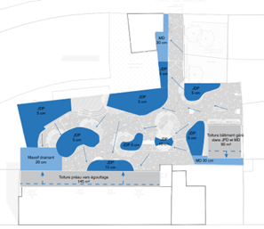
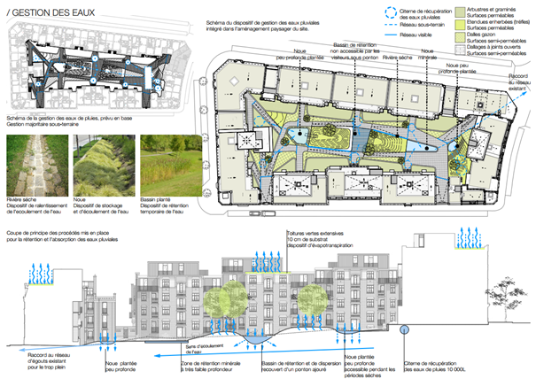

<!DOCTYPE html>
<html>
<head>
    <meta charset="utf-8">
    <meta name="viewport" content="width=device-width, initial-scale=1.0">
    <title>Carte Visite B</title>
    <script src="https://cdnjs.cloudflare.com/ajax/libs/leaflet/1.7.1/leaflet.js"></script>
    <link rel="stylesheet" href="https://cdnjs.cloudflare.com/ajax/libs/leaflet/1.7.1/leaflet.css" />
</head>
<body>
    <div id="map" style="width: 100%; height: 600px;"></div>
    <script>
        var map = L.map('map').setView([50.819, 4.38], 14);
        
    L.tileLayer('https://{s}.basemaps.cartocdn.com/light_all/{z}/{x}/{y}{r}.png', {
        attribution: '&copy; <a href="https://carto.com/">CARTO</a> contributors',
        subdomains: 'abcd',
        maxZoom: 20
    }).addTo(map);

// Fonction pour charger un fichier KML
function loadKML(map, url, color, dashArray = null) {
    fetch(url)
        .then(response => response.text())
        .then(kmlText => {
            var parser = new DOMParser();
            var kml = parser.parseFromString(kmlText, 'text/xml');
            var track = new L.KML(kml);
            track.setStyle({ color: color, weight: 4, opacity: 0.8, dashArray: dashArray });
            map.addLayer(track);
        })
        .catch(error => console.error('Erreur de chargement KML:', error));
}

// Ajout des itinéraires avec l’URL brute GitHub
loadKML(map, 'https://raw.githubusercontent.com/facilitateureau/VisiteB/main/VISITE_B_itinéraire_pied.kml', 'rgb(141, 182, 60)', '10,10');
loadKML(map, 'https://raw.githubusercontent.com/facilitateureau/VisiteB/main/VISITE_B_itinéraire_pied_2.kml', 'rgb(141, 182, 60)', '10,10');
loadKML(map, 'https://raw.githubusercontent.com/facilitateureau/VisiteB/main/VISITE_B_itinéraire_BUS.kml', 'rgb(0, 111, 144)');

        
        // Markers for sites
        var site1 = L.marker([50.8265095, 4.3749665]).addTo(map)
            .bindPopup("<b>Site 1: École Sainte Trinité</b><br>");
        
        var site2 = L.marker([50.812659, 4.390111]).addTo(map)
            .bindPopup("<b>Site 2: Projet Vandeuren</b><br>");
    </script>
</body>
</html>
